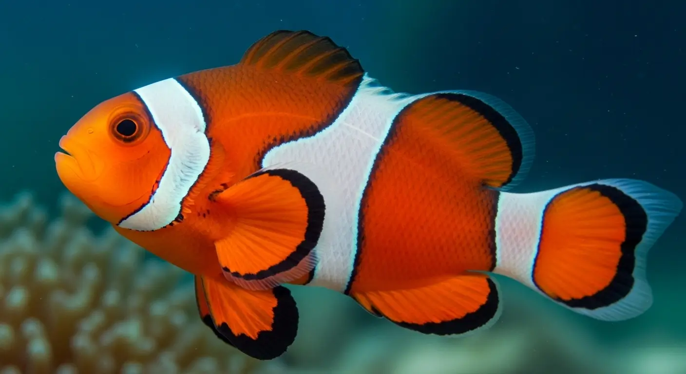

Grande Barreira de Coral

O maior sistema de recifes do mundo, com mais de 2.300 km. É tão grande que pode ser visto do espaço e abriga uma biodiversidade marinha incomparável.
Espécies principais:
Peixe-palhaço (Amphiprion ocellaris)
Nos recifes coloridos da Austrália, o peixe-palhaço dança entre os tentáculos urticantes das anêmonas. Seu corpo laranja vibrante contrasta com o azul profundo do oceano, enquanto ele protege ferozmente seu pequeno território. Uma parceria perfeita: a anêmona o protege, e ele afasta predadores.
Tartaruga-verde (Chelonia mydas)

Gigantes gentis. Elas deslizam pela água como se o mar fosse seda. Podem viajar milhares de quilômetros, mas sempre retornam às mesmas praias para desovar. Nos recifes, são jardineiras naturais, mantendo as algas sob controle.
Coral-cérebro (Diploria labyrinthiformis)

Parecendo uma estrutura alienígena, o coral-cérebro constrói labirintos calcificados ao longo de séculos. À noite, libera seus tentáculos minúsculos para capturar plâncton — um espetáculo invisível para quem não sabe observar. Ele é o arquiteto silencioso do recife.
Localização:
Austrália
Temperatura Média:
23-29°C
Ameaças:
Branqueamento de corais devido ao aquecimento global, poluição e a estrela-do-mar coroa-de-espinhos.
Conservação:
Protegida pela UNESCO e pelo 'Reef 2050 Plan' do governo australiano.